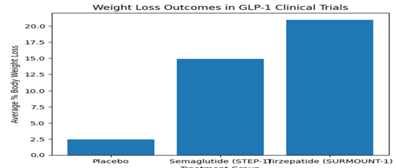

Behind the headlines, the celebrity endorsements and the TikTok transformations — what GLP-1 weight-loss drugs actually mean for the people taking them, the system selling them, and the public conversation around them.
You have almost certainly come across them — on TikTok, in the news, in conversations between friends. Weight-loss injections with names like Ozempic, Wegovy and Mounjaro have become one of the defining health stories of the mid-2020s, reshaping how millions of people think about obesity, medicine and their own bodies.
An estimated 1.4 million people in the UK are now obtaining these drugs through private routes alone (Jackson et al., 2026), and global pharmaceutical revenues from this class of medication are projected to exceed $200 billion by 2030 (J.P. Morgan, 2026). By any measure, this is a cultural and medical phenomenon that deserves serious scrutiny.
But scrutiny is in short supply. Across digital platforms, the dominant narratives about GLP-1 receptor agonists (the drug class that includes semaglutide and tirzepatide) tend to cluster at two extremes: breathless enthusiasm from influencers and celebrity users, or categorical dismissal from those who see a pill-shaped shortcut where lifestyle change should be. Neither extreme is particularly useful — especially not for young adults who are encountering these drugs for the first time through an algorithm rather than a clinic.
This website is designed to cut through that noise. We are a team of researchers with backgrounds in medicine and bioscience, and we believe the evidence deserves to be communicated honestly, with all its nuance intact. Our position, developed after reviewing the clinical, economic and media literature, is that GLP-1 drugs carry real and meaningful benefits for people with medically defined obesity — but that the way these drugs are currently being marketed, accessed and discussed poses serious risks to public health, patient safety and health equity.
This resource is structured across three interconnected sections. The Business section examines who profits from the GLP-1 boom and what commercial interests shape access to treatment. The Media section investigates how coverage — from tabloids to TikTok — has constructed a cultural narrative that often diverges sharply from clinical reality. The Health section evaluates the evidence honestly, including what the trials actually show, what happens when treatment stops, and why these drugs cannot on their own address the structural roots of the UK obesity crisis. A concluding section brings these threads together to consider the ethical questions that remain unanswered.
Our aim is not to discourage anyone from seeking medical help for obesity. It is to ensure that when young adults engage with GLP-1 drugs — whether as patients, future clinicians, or simply as citizens navigating a complex media environment — they do so with clear eyes and accurate information.
There is a useful rule of thumb when a health intervention becomes a cultural moment: follow the money. In the case of GLP-1 weight-loss drugs, the financial trail is both illuminating and troubling.
To understand the commercial story, it helps to begin with the scale of the problem these drugs are responding to. In England alone, more than one in four adults (26%) were classified as obese in 2022, with a further 38% categorised as overweight (NHS Digital, 2023). Obesity is associated with a range of serious conditions including type 2 diabetes, cardiovascular disease and certain cancers, and it costs the NHS an estimated £6.5 billion per year (GOV.UK, 2025). These are not abstract statistics — they represent a genuine and growing public health crisis that has resisted decades of largely ineffective policy intervention.
That growth is almost entirely concentrated in two companies: the Danish firm Novo Nordisk, which manufactures semaglutide (sold as Ozempic for diabetes and Wegovy for weight loss), and the American company Eli Lilly, which produces tirzepatide (Mounjaro). This duopoly structure has profound implications for pricing, access and the long-term sustainability of treatment.
The ability of Novo Nordisk and Eli Lilly to maintain dominant market positions and premium pricing is deeply rooted in their strategic management of intellectual property. Analysts have described the protections surrounding these compounds as a 'patent fortress' — a layered architecture of patents covering not just the active molecules themselves, but also delivery devices, chemical stabilisation methods and specific dosing protocols (Drug Patent Watch, 2026).
In practical terms for UK patients, generic versions of semaglutide cannot enter the market until at least 2031, and tirzepatide is protected until at least 2032 (Lottering, 2026). The consequence is that prices remain entirely dictated by two corporations with no competitive pressure. By 2025, a single month of Mounjaro treatment in the UK's private market cost approximately £330 (Parmar, 2026).
This pricing dynamic sits within what public health scholars call the 'commercial determinants of health' — the ways in which market structures and business decisions shape population health outcomes (The King's Fund, 2025). When access to a treatment is determined by purchasing power rather than clinical need, existing health inequalities are not just maintained but actively deepened. Deprived communities in England have significantly higher rates of obesity than affluent ones (GOV.UK, 2025), yet these are precisely the communities least able to afford private prescriptions.
In response to both fiscal constraints and genuine uncertainty about long-term population-level prescribing, NICE and NHS England have established strict eligibility criteria for GLP-1 treatments. Typically, NHS patients require a body mass index of 40 or higher alongside at least one serious obesity-related comorbidity, and must be referred through specialist weight management services (NICE, 2023).
In the absence of NHS access, around 1.4 million individuals have turned to private online pharmacies and clinics (Jackson et al., 2026), many of which operate with far less rigorous prescribing oversight than a GP or specialist clinic would provide. The commercial expansion of the private market has, in effect, been built on the foundations of NHS rationing.
This restricted access raises difficult questions. Are the NHS criteria genuinely evidence-based, or do they also reflect Treasury-driven cost containment? And if the latter, is it ethical for a healthcare system to maintain eligibility thresholds that functionally restrict access by class?
There is a legitimate counterargument to the critical framing above. Commercial investment in GLP-1 development has produced a class of treatments that demonstrably works for many people (Wilding et al., 2021; Jastreboff et al., 2022). Pharmaceutical profit motive, whatever its ethical complications, has driven the clinical trials, regulatory approval processes and manufacturing scale-up that made these treatments available at all.
And markets, by definition, do not distribute goods according to need. The business story of GLP-1 drugs is ultimately a story about what happens when healthcare is treated as a commodity, and it is one that public health cannot afford to ignore.
If the business story is about who profits, the media story is about who is influenced — and how. Few health topics in recent years have generated as much coverage, commentary and confusion as GLP-1 weight-loss drugs.
GLP-1 drugs were not always tabloid material. Semaglutide was first approved for type 2 diabetes management in 2017, and for several years its coverage was confined largely to endocrinology literature and specialist press. That changed rapidly around 2022–2023, when celebrity use, supply shortages and social media transformation stories brought these drugs to a mass audience.
Young adults aged 18–35 are a particularly important demographic within this landscape. For many in this age group, the first encounter with GLP-1 drugs comes not through a GP consultation but through a TikTok video, an Instagram advertisement or a celebrity interview (Marie Claire UK, 2026). This matters enormously, because the framing provided in those first encounters shapes expectations, decisions and ultimately health behaviours.
Early and ongoing mainstream media coverage has been marked by a consistent rhetorical pattern: the 'miracle jab' frame. Tabloid headlines and magazine features have emphasised dramatic, rapid weight loss — often illustrated with before-and-after images — and have frequently foregrounded celebrity users as proof of concept. Figures including Elon Musk and Serena Williams have publicly discussed or been associated with GLP-1 use, reinforcing the perception that these are lifestyle-enhancement products for the aspirational consumer rather than treatments for a chronic metabolic disease (Fick and Satija, 2025).
The clinical evidence does support significant weight loss. The STEP 1 trial found that semaglutide-treated adults lost an average of 14.9% of body weight over 68 weeks, compared to 2.4% in the placebo group (Wilding et al., 2021). But what the 'miracle jab' coverage routinely omits is the clinical context: trials were conducted in people with BMI ≥30 or BMI ≥27 with comorbidities, weight loss requires concurrent lifestyle modification, and the effects diminish or reverse when treatment stops (Wilding et al., 2022). A headline about someone losing three stone rarely mentions that they will regain most of it if they stop the injections.
There is a further complication around celebrity endorsements. It is often unclear whether public figures are sharing personal experiences organically or whether they are in paid promotional relationships with pharmaceutical companies or affiliated private clinics. When a celebrity endorses a product commercially, disclosure obligations exist; when they share what appears to be a personal health journey, no such obligations apply — even if the effect on audience behaviour is identical.
On TikTok and Instagram, the architecture of the platform itself shapes what health information reaches young audiences. Algorithmic systems prioritise content that generates engagement — shares, comments, emotional reactions — over content that is accurate or clinically balanced. Dramatic transformation stories, striking before-and-after images and emotionally resonant personal narratives consistently outperform evidence-based health communication in this environment (Fick and Satija, 2025).
The result is that hashtags such as #OzempicJourney and #WegovyResults have generated millions of views, with content frequently focusing on dosage strategies, rapid aesthetic changes and routes to private access rather than clinical indication, risk profiles or long-term considerations (Fick and Satija, 2025). This represents a textbook example of an infodemic (Eysenbach, 2002; World Health Organization, 2025).
A question worth sitting with: when an individual shares their personal GLP-1 journey on social media, do they carry any obligation to contextualise that experience within the broader evidence base? Many would argue no — personal testimony is legitimate. But when platform algorithms amplify those individual stories to audiences of hundreds of thousands, and when those stories are often the primary health information young adults receive about a prescription medication, the aggregate effect becomes a public health concern regardless of individual intent.
In the UK, it is illegal to directly advertise prescription-only medicines to the public. Yet by 2025, advertisements for 'weight loss injections' had become ubiquitous across Google, Instagram, Facebook and TikTok. The advertisements carefully avoided naming specific GLP-1 products but used imagery — injection pens, slim figures, before-and-after compositions — that made their subject unambiguous (Advertising Standards Authority, 2025).
In response, the ASA, in collaboration with the MHRA and the General Pharmaceutical Council, issued enforcement guidance explicitly prohibiting such advertisements. The ASA has also deployed AI-based monitoring systems to identify non-compliant content at scale (Advertising Standards Authority, 2025; Davis, 2025). These are meaningful steps, but they represent regulation chasing a problem that had already been widely normalised.
The enforcement challenge points to a broader structural issue. When NHS eligibility thresholds exclude the majority of people who could clinically benefit, demand does not disappear — it migrates to the private market, where oversight is lighter and advertising pressure is higher. Counterfeit drugs represent perhaps the most acute expression of this risk: enforcement operations in 2025 and 2026 uncovered thousands of illegal and falsified GLP-1 doses circulating in the UK market (Marsh, 2025; Reuters, 2026).
Not all media coverage has been superficial. Long-form journalism and documentary filmmaking have produced more nuanced treatments of the GLP-1 story. Works such as The Ozempic Effect: Beyond the Waistline (2026) have contextualised these drugs within debates about obesity stigma, pharmaceutical influence and healthcare equity.
The challenge is reach: TikTok content routinely reaches tens of millions of people; a documentary on a streaming platform reaches far fewer, and tends to attract audiences already motivated to engage with nuance. The media story of GLP-1 drugs is, ultimately, also a media literacy story — and these are skills that neither formal health education nor algorithmic platforms are currently doing enough to cultivate.
It is tempting, given the scale of the commercial and media distortions, to conclude that GLP-1 drugs are simply overhyped. That conclusion would be too simple — and inaccurate. There is robust clinical evidence that these drugs work for the populations they were designed to treat. The problem is the mismatch between what the evidence shows and how these treatments are being used in the real world.
GLP-1 (glucagon-like peptide-1) receptor agonists mimic the action of a naturally occurring gut hormone that is released after eating. By binding to GLP-1 receptors in the pancreas, brain and gastrointestinal tract, these drugs stimulate insulin secretion, suppress glucagon, slow gastric emptying and signal satiety to the hypothalamus (Drucker, 2018). The cumulative effect is a reduction in appetite and caloric intake that is physiologically mediated — not simply a matter of willpower.
The clinical evidence base for GLP-1 drugs is genuinely impressive within its intended population. The STEP 1 trial randomised adults with a BMI of 30 or above (or BMI 27 with at least one weight-related comorbidity) to receive either semaglutide or placebo over 68 weeks. As shown in Figure 1 below, the differences in weight loss outcomes between groups were striking.

However, there is a critical dimension to these results that mainstream coverage consistently underplays: these trials enrolled people with clear medical need. Trial participants had BMIs placing them in the obese range, often alongside comorbidities such as hypertension or prediabetes. They were monitored by clinical teams, supported with lifestyle counselling, and screened for contraindications.
This is a fundamental principle of evidence-based medicine that is poorly communicated in public discourse. It is not a minor technicality; it is a matter of health literacy that directly affects the risk-benefit calculation for anyone using these drugs outside the clinical indication. Patients and the public increasingly need the tools to ask not just 'does this drug work?' but 'does it work for people like me, in circumstances like mine, and what is the quality of the evidence?' (Nutbeam, 2000).
Like all medications with systemic metabolic effects, GLP-1 drugs carry a meaningful side effect profile. The most common adverse events are gastrointestinal: nausea, vomiting, diarrhoea and constipation. In the STEP 1 trial, approximately 74% of semaglutide recipients reported gastrointestinal side effects, though the majority were transient (Wilding et al., 2021). More serious but rarer adverse effects include pancreatitis and gallbladder disease (MHRA, 2024).
For patients receiving treatment through NHS specialist services or responsible private practitioners, these risks are managed through gradual dose escalation and clinical monitoring. The same cannot be said for the growing proportion of users accessing GLP-1 drugs through online pharmacies with limited oversight, or through counterfeit supply chains. The drugs themselves are not inherently more dangerous in these contexts, but the conditions of use are.
The clinical reality of GLP-1 drug cessation is one of the most important and least publicised aspects of this treatment class. The STEP 1 trial extension followed participants for one year after medication was discontinued and found that they regained approximately two-thirds of the weight they had lost (Wilding et al., 2022).
For many of the 3.3 million people who have expressed interest in GLP-1 treatment, the prospect of indefinite pharmaceutical dependency to maintain a health improvement they have already achieved may not be what they signed up for. The informed consent implications are significant.
Young adults exposed to GLP-1 narratives primarily through social media are at particular risk of approaching these drugs as a short-term aesthetic intervention rather than a long-term medical treatment. There is also a specific concern about the interaction between GLP-1 use and disordered eating: the appetite suppression these drugs produce is clinically useful in obesity management, but in individuals with existing or subclinical eating disorders, the same pharmacological mechanism could mask or exacerbate harmful patterns.
Perhaps the most important health critique of the current GLP-1 landscape is the one that is hardest to monetise: these drugs, however effective at the individual level, cannot address the population-level conditions that drive obesity in the first place.
Public health evidence is clear that obesity is profoundly shaped by structural factors: the concentration of ultra-processed food retail in deprived communities, the design of built environments that discourage physical activity, working conditions that leave insufficient time for food preparation, advertising systems that disproportionately target children with high-calorie products, and economic inequality that makes healthy living materially difficult (Nesta, 2026).
If policy attention and healthcare investment are redirected towards pharmaceutical solutions at the expense of preventative legislation, food environment reform and economic inequality interventions, the GLP-1 boom will have made the population health picture worse in the long run, not better. The result is a classic Matthew effect in healthcare: those with the greatest need receive the least support, while those with sufficient resources are over-medicating (The King's Fund, 2025). GLP-1 drugs do not create this inequality — but in their current form, they deepen it.
The three sections of this resource have traced a connected story. Commercially, GLP-1 drugs have generated a market dominated by two corporations exploiting patent protections to maintain premium pricing. In media, these drugs have been culturally constructed in ways that systematically misrepresent the evidence and inflate demand outside clinical indications. In terms of health, the drugs work for the populations they were designed to treat, but those clinical results are being generalised without evidentiary justification.
These are not separate problems. They are manifestations of the same underlying dynamic: a profit-driven pharmaceutical and media ecosystem that benefits from widespread GLP-1 use regardless of whether that use is clinically appropriate, equitably distributed or accompanied by the structural interventions that genuine population health improvement requires.
Is it acceptable for treatment access to depend on an individual's ability to pay £330 per month, when the communities with the highest obesity prevalence also have the lowest incomes
Can media enthusiasm for these drugs coexist with responsible risk communication, or does the commercial logic of digital platforms structurally preclude it
Does the widespread cultural adoption of GLP-1 drugs reduce the stigma historically attached to obesity, or does it create a new form of pressure in which bodies that do not conform to social ideals are expected to be medicated into compliance
We do not claim to have definitive answers to these questions. But we believe they are the right questions to be asking, and that they are asked too rarely in a public conversation dominated by before-and-after photographs and revenue projections.
The Ozempic era has arrived. The question is whether the systems around it — clinical, commercial, regulatory, communicative — are adequate to ensure it delivers benefit rather than extracting profit. The evidence reviewed here suggests significant work remains to be done.